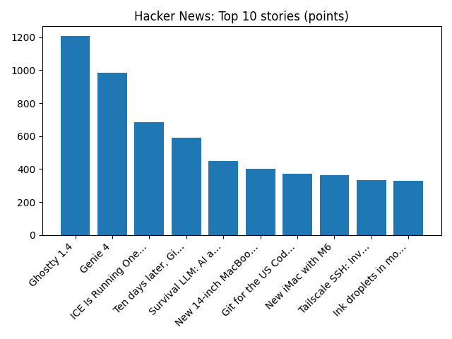

The one thing that didn't change that will affect your pay the most
BBC — Business
YOUR DAILY INTELLIGENCE BRIEF · 2026-10-28
Global watch: The one thing that didn't change that will affect your pay the most, Budget 2026: Key points at a glance.
Northern Virginia: 27 Virginia Cancer Specialists Physicians Named to Washingtonian Magazine's Top Doctors List 2026 - Morningstar, Virginia mother charged with homicide after 8-month-old infant drowns in bathtub - FOX 5 DC.

Global coverage includes The one thing that didn't change that will affect your pay the most; Budget 2026: Key points at a glance; US sanctions North Korean network accused of defrauding businesses - Reuters. Local coverage includes 27 Virginia Cancer Specialists Physicians Named to Washingtonian Magazine's Top Doctors List 2026 - Morningstar; Virginia mother charged with homicide after 8-month-old infant drowns in bathtub - FOX 5 DC.

Meadows, Maryland
Meadows is an unincorporated community located in Prince George's County, Maryland, United States, located near the east end of Joint Base Andrews.
https://en.wikipedia.org/wiki/Meadows,_Maryland
The Mutual Occultation of Ganymede and Io
Runs so far today: 2